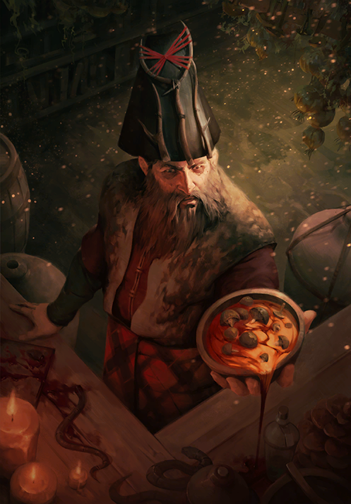
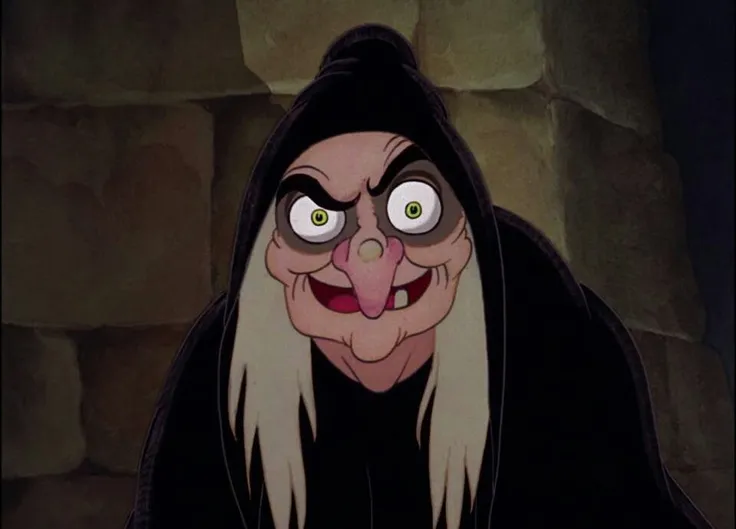

Druida Perolbaldo Azeitonas
O druida da vila da caça, membro da guilda dos ladrões e um dos principais defensores da vila contra o mal que tomou a vila de baixo.
Bruxa Biruleuda Lacerda
A bruxa local da vila que amaldiçoou os jovens após eles queimarem a vila antiga onde ela mora, eles achavam que a causa do mal que tomou a vila de baixo era ela.